Den här uppgiften har vi tagit fram tillsammans med Julia och Maria som jobbar på Spotify i Stockholm. Det är en fortsättning på förra uppgiften där du fick komma igång och lära känna programmeringsspråket Sonic Pi, och här får du chans att utforska vidare och skapa helt egen musik!
I förra uppgiften fick du skriva in siffror efter play, till exempel 60, 62. Siffrorna representerar noter och motsvarar något som kallas MIDI-noter.
Det finns en tabell som visar hur dessa nummer motsvarar vanliga noter som används när man spelar instrument som till exempel piano:
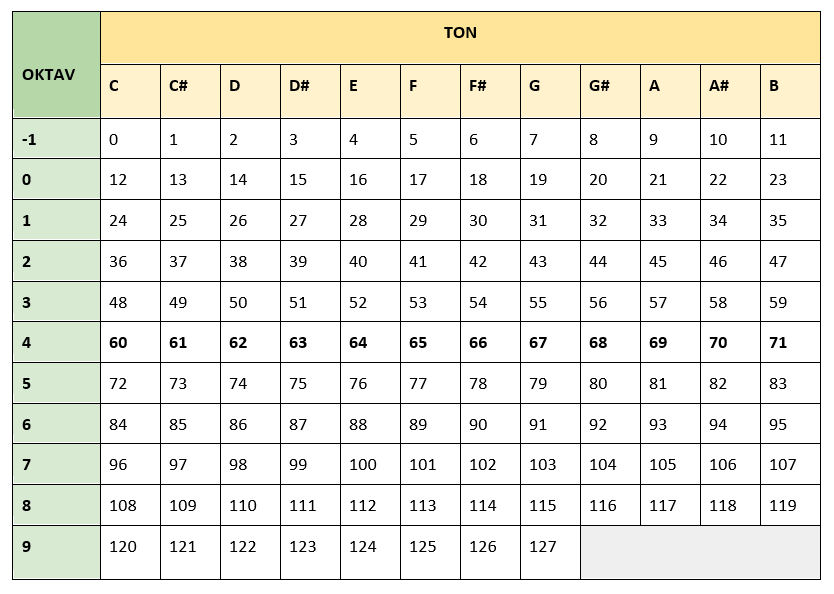
C4 D4 E4 F4 står för TON och OKTAV, medan 60 62 64 65 är MIDI-noter. Den här tabellen kan vara väldigt användbar när du vill översätta vanliga noter som kan spelas på ett piano till siffror att använda i Sonic Pi.
Att översätta från vanliga noter till siffror kan ta ett litet tag. Du kan om du vill direkt använda vanliga noter i SonicPi, genom att skriva vilken TON i vilken OKTAV som du vill använda.
En oktav kan enkelt förklaras som en grupp av åtta tonsteg, vilket motsvarar avståndet från ett C till nästa C:
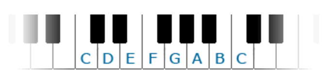
Ju lägre nummer på oktaven ju lägre ton (motsvarar den vänstra sidan av ett piano) och ju högre oktavnummer desto högre ton (motsvarar den högra sidan av ett piano).
Nu ska du få prova att koda "Blinka lilla stjärna" med noter istället för MIDI-toner.
Öppna en ny buffer i Sonic Pi.
Då testar vi att skriva "Blinka lilla stjärna" med noter istället. Gör som på bilden:
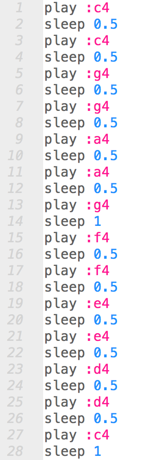
Testa ditt program! Klicka på RUN. Låter melodin som den du gjorde med MIDI-toner i förra uppgiften?
Du kan ge olika input till tonerna, det vill säga ge kommandon som beskriver hur du vill att tonerna ska låta. Det gör du i en kommaseparerad lista efter tonen:
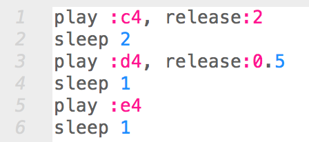
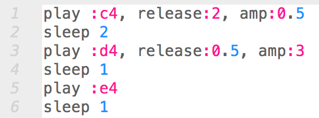
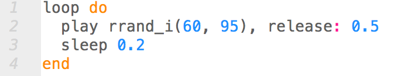
Testa ditt program! Klicka på RUN och ändra i koden medan du lyssnar. Prova dig fram!
Vi kan göra det ännu mer spännande genom att byta ut vilken synth vi använder oss av. Default, det som blir om du inte anger någon synth alls, är en som heter beep.
För att byta synth behöver du skriva koden use_synth :[namnet på synthen]. Här i exemplet använder vi use_synth :saw.
Testa ur det låter med och utan synthen saw:
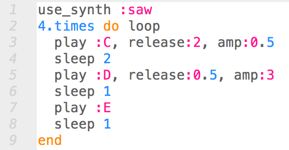
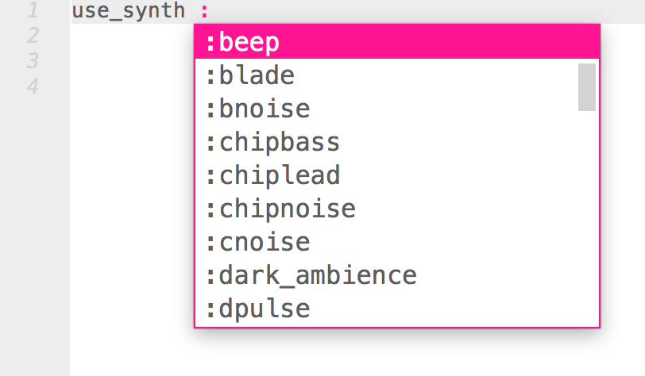
Testa ditt program! Klicka på RUN och ändra i koden medan du lyssnar. Prova dig fram och hitta synthljud som du tycker om!
I den här delen ska vi kombinera det vi har lärt oss hittills med att använda samplingar, det vill säga förinspelade ljud som finns tillgängliga i Sonic Pi. En SAMPLING är ett inspelat ljud från vad som helst, det kan till exempelvis vara ljudet av en kaffemaskin eller från en bil.
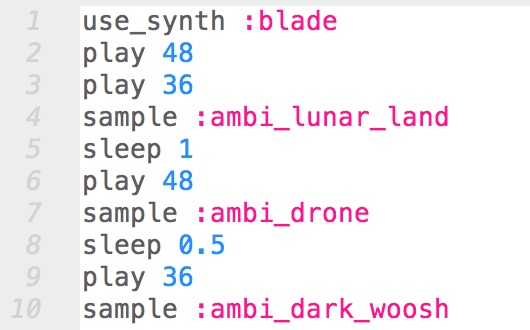
Tips! Märker du att sleep-kommandot inte väntar in att ett ljud ska avslutas? Det kontrollerar bara när nästa ljud ska börja! Så om en sampling är längre än pausen så kommer nästa ljud börja spelas innan samplingen är klar. Ändra värdet på sleep om du vill ha längre paus.
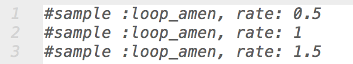
Prova att sätta rate: till -1. Kan du höra vad som händer? Jo, samplingen spelas baklänges!
Nu får du testa olika samplingar i Sonic Pi. Hitta din favorit! Längst upp i koden, skriv sample : Efter kolon kommer du få förslag på samplingar som du kan använda. Testa dig fram med hjälp av denna lista på sample-prefix:
sample :ambi_
Testa ditt program! Klicka på RUN. Prova att ändra samplingar medan du lyssnar och skapa musik med ljuden!
En av de roligaste delarna av Sonic Pi är möjligheten att enkelt lägga studioeffekter (FX) till sina ljud!
För att använda effekter på samplingar, skriver du koden with_fx :[namnet på studioeffekten] do [ljudet du vill använda studioeffekten på] end.
Testa att lägga till studioeffekten echo, eko-effekt på dina ljud. Lyssna med och utan effekten för att höra skillnaden:
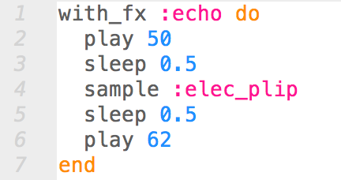
Prova dig fram med olika effekter. Här är en lista med exempel på tillgängliga studioeffekter som du kan använda:
:wobble
Testa ditt program! Klicka på RUN. Prova att ändra studioeffekter medan du lyssnar och hör hur ljuden förändras!
Grattis, nu har du lärt dig att programmera musik! I nästa uppgift får du fler tips på hur du kan skapa egen musik med Sonic Pi. Men redan här har du några utmaningar om du vill testa dig fram på egen hand:
I den här utmaningen får du använda din fantasi och dina nyligen lärda kunskaper i Sonic Pi för att testa dig fram i den digitala musikskapandets härliga och oändliga värld!
Kan du kanske:
Skapa en helt ny låt?
Göra en egen version av Blinka lilla stjärna?
Översätta en av dina favoritlåtar till Sonic Pi?
De flesta kända melodier kan du hitta noterna till på nätet. Till exempel här! Men det kräver att du kan läsa noter, om inte rekommenderar vi alternativ 1 eller 2.
Vill du göra din egen musik i Sonic Pi till Scratch-uppgiften Framtidens musikspelare? Du behöver göra två olika låtar, till exempel en glad och en arg låt, eller så många som behövs för din musikspelare.
Om du vill spara din musik i Sonic Pi, finns en instruktion för det här.
Här är exempel på andra låtar som vi har översatt till Sonic Pi, som du kan bygga vidare på. Följ koden på bilden och skriv in i ditt program. Testa då och då och försök lyssna om det låter rätt!
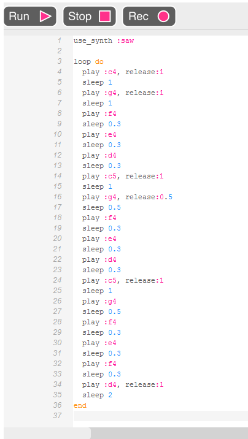
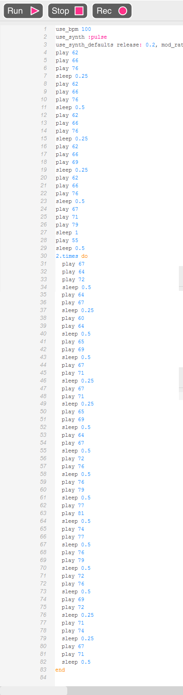